The Proximity Box is an interactive box that detects a user's proximity! Last seen at the 2015 San Mateo Maker Fair!
The Proximity Box senses a user's proximity by detecting the intensity of infrared light reflected off the user. The modular boxes vary the color of the several hundred LEDs on their surfaces to indicate the proximity of a detected object. If you want to know about the innards, skim past the following picture gallery.
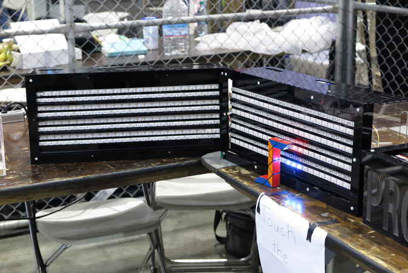
Figure 1. The proximity box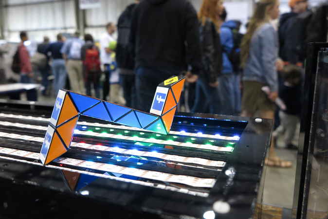
Figure 3. Anything works with the box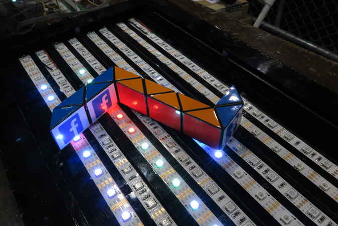
Figure 4. The lights are blindingly awesome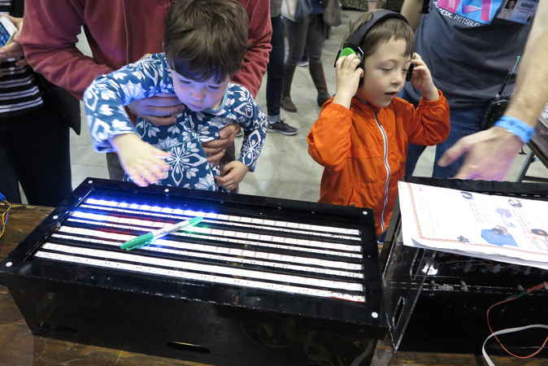
Figure 5. Kids love it!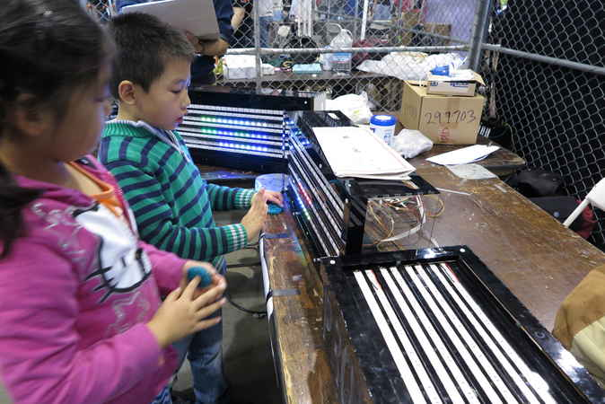
Figure 6. Kids really love it!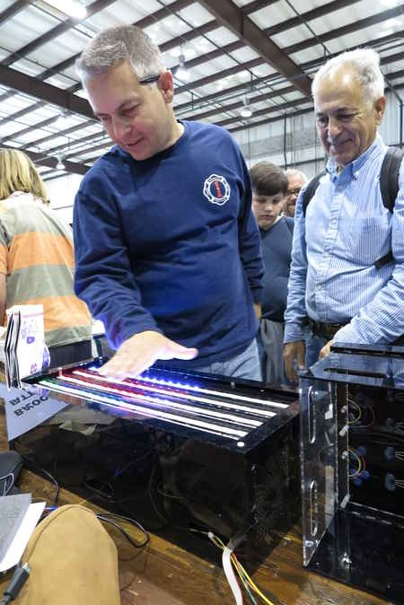
Figure 7. Feel the box feel youThe Proximity Box uses infrared sensors for input and addressable LEDs for output.
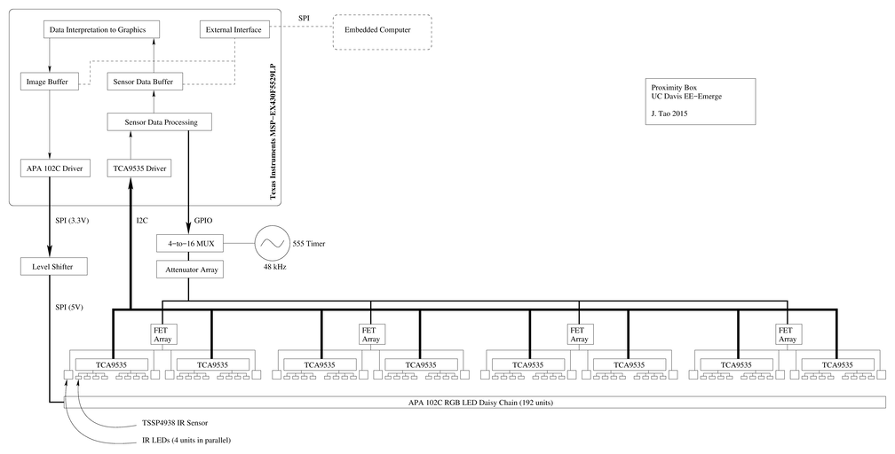
Figure 8. A block diagramThe basic principle of the Proximity Box is to shine infrared light from the interactive surface to a nearby object and then detect the intensity of reflections from objects. Less intensity would mean that the object is further away, since intensity diminishes with distance.
One of the challenges of using infrared light is that ambient infrared interferes with the sensing. I found a solution by using the Vishay TSSP4938 sensors, which have an optical filter to select only a particular wavelength of infrared and have an integrated demodulator to pick out modulated infrared from the environment. Modulation can be done by simply blinking an IR LED (or IR LED strips in my case) at the correct modulation frequency as specified in the sensor's datasheet.
Vishay's TSSP line is quite special because they can express intensity as a pulse width. The more popular version of the sensor only detects whether or not the light has exceeded a threshold and outputs a binary high or low. With the TSSP sensor, a weakly detected signal would correspond to a narrow (in time) pulse, while a strong one would correspond to a wide pulse. An incredibly strong signal would give a constant level, an "infinite width pulse." Note that the pulse encoding is not a continuous PWM signal, but a single impulse-like pulse beginning when any low intensity IR is detected. In math-land, the pulse is u(t) - u(t-a), where a is proportional to intensity. More about Vishay's TSSP can be found in their application note/brochure.
After the sensors detect proximity, corresponding colors were displayed on a very long chain of APA102 RGB LEDs (see my post on the LED). The APA102 RGB LEDs are daisy-chained LEDs with memory and a simple shift-register-like SPI interface. Although it may seem that there are four separate surfaces for the Proximity Box, the LEDs are are actually daisy chained across all four boxes.
The hardware, modular in design, is composed of the Motherboard, the Panel, and the Subpanel. A single Motherboard connects to four Panels. Each Panel connects to four Subpanels. In total there are 128 infrared sensors and 384 output LEDs.
Since I was a busy student at the time, the hardware was designed with lack of time on mind. For example, through-hole components were chosen over SMD, since it's easier to solder or probe through-hole components than SMD. Another instance is that I used a resistor network in a DIP form instead of individual ones to save time while soldering.
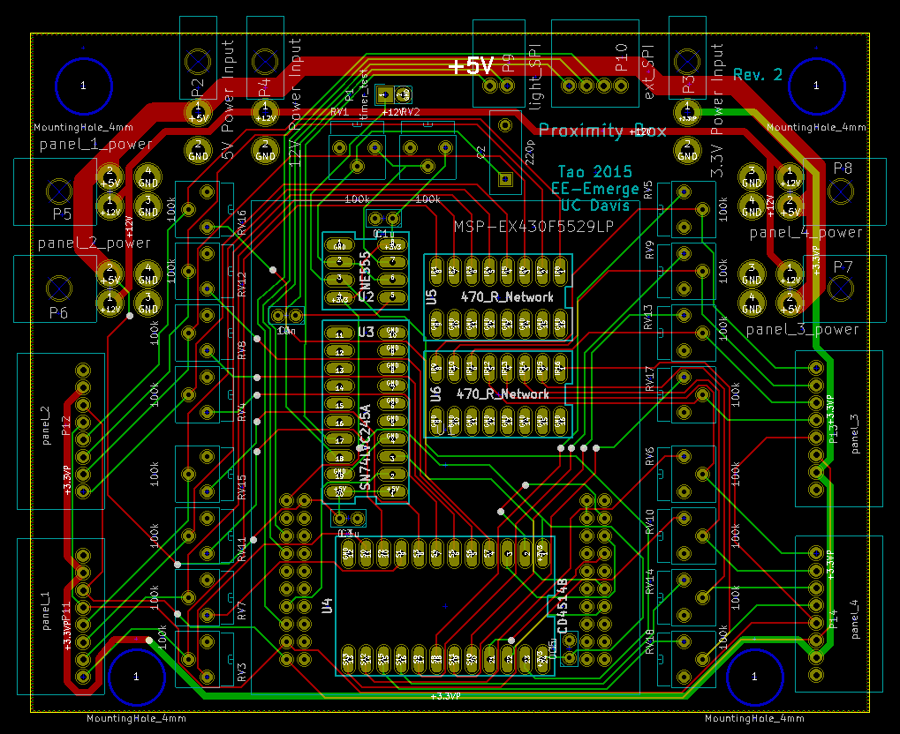
Figure 9. The motherboardThe motherboard houses the microcontroller, supporting circuity, and connectors. The microcontroller used was the MSP430 (MSP-EX430F5529LP), chosen for its availability at the time. Supporting circuity includes a 555 timer for modulating the infrared LEDs without controller intervention, a MUX for selecting the infrared LEDs, and a level shifter. The motherboard also includes 16 potentiometers to tune the intensity of the infrared LEDs in case a stronger or weaker signal is needed. The motherboard has no power circuity, because the Proximity Box is powered by a PSU taken from a computer. Just three wires from the mother board are needed to push data to the output LED strip.
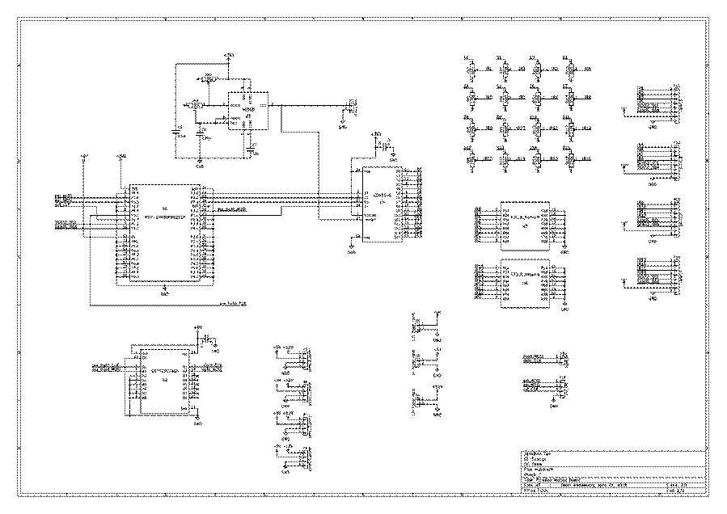
Figure 10. The motherboard schematic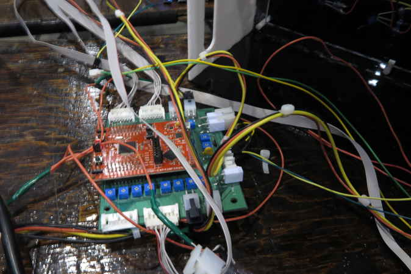
Figure 11. The motherboard in the field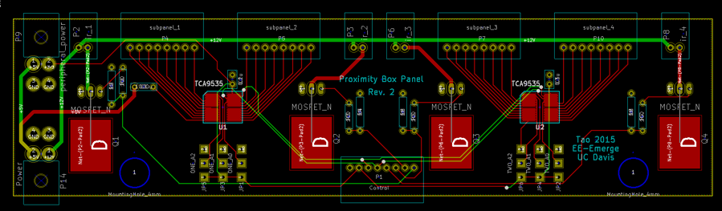
Figure 12. The panelThe motherboard is connected to four panel circuits which correspond to the four boxes. The panel circuits contain TI's TCA9535 I2C I/O expanders that read in the pulses from the TSSP sensors. Since no hardware interrupts are available at this scale, the I/O expanders were simply sampled very quickly to obtain the pulse width. The panels also have four FETs that modulate the infrared LEDs.
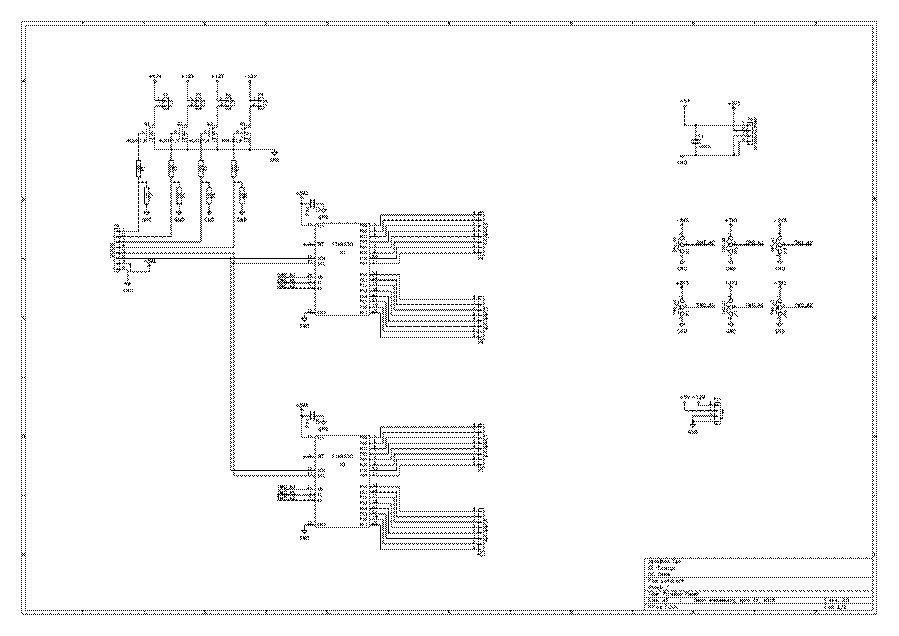
Figure 13. The panel schematic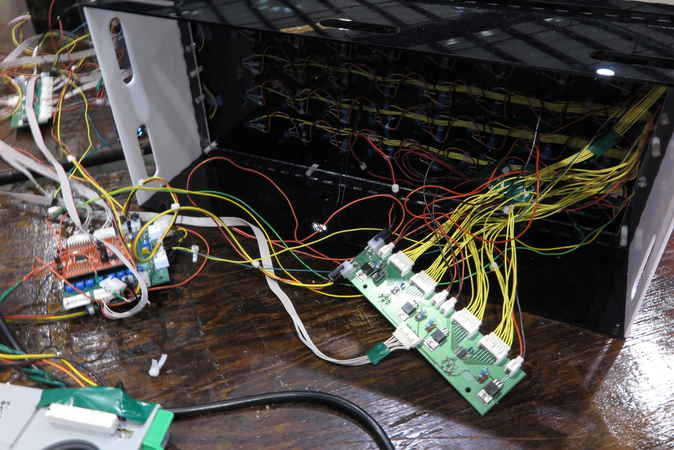
Figure 14. The panel on the right and motherboard on the leftThe subpanels were not actual circuit boards, but a schematic exists for it. Each panel is connected to four subpanels, which corresponds to the four rows of sensors on each box. The subpanels were constructed with plenty of hot glue and ribbon cables.
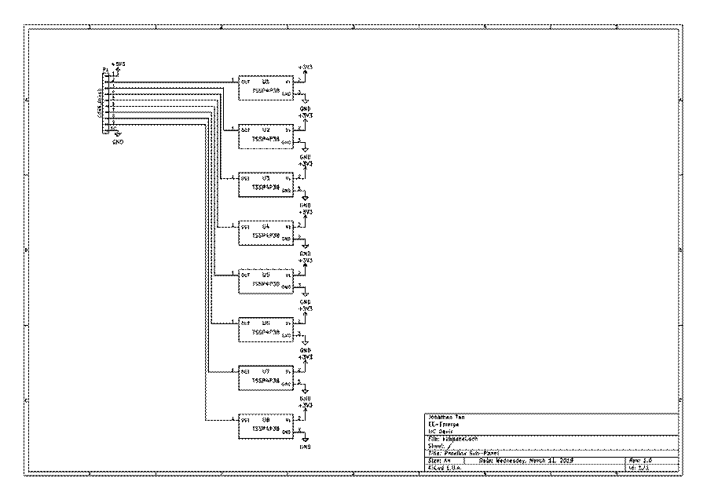
Figure 15. The subpanel schematicThe gist of the code is that I had to measure the pulse width (indicating signal strength) of every sensor through I2C, convert pulse width to pixel color, and then send the data to the LEDs.
The challenge was doing this fast enough for the system to respond in real time. Thinking that I was working with a large and slow system, I did a few hacks with loop unrolling, a few I2C header-skipping shortcuts specific to the I/O expander, and parallelized polling. It turns out I underestimated my hacks, so the ProxBox updates so fast (I don't remember the exact rate, but it was definitely over 100 Hz), it's almost like a shadow under your finger tips.
The code for this project is in this GitHub repository (used with the Code Composer IDE). I have to admit, some of the code is disgusting, since I added a lot of fixes in the last minute. The following is a cleaned up version of my main.c.
#include <msp430.h>
#include <stdint.h>
#include "led_drive.h"
#include "sensor.h"
... setup/configuration function definitions here
int main(void)
{
WDTCTL = WDTPW | WDTHOLD; // Stop watchdog ti
config_clock();
config_spi();
config_i2c();
config_gpio();
// LED Table
uint8_t led_table[TABLE_SIZE]; // [ 0x0E + Brightness | B | G | R ]
off(led_table, NUM_LED);
uint32_t i, reset_count=0;
// SENSE Table
uint16_t sense_table[NUM_SENSE];
for(;;)
{
P1OUT ^= 0x01; // blinky
gather(sense_table);
off(led_table, NUM_LED);
process(led_table, sense_table);
put_data(led_table, NUM_LED);
} // main loop
return 0;
}
1/21/16: added block diagram
1/1/16: Revised wording. I finally found my found and fixed my PCB files. The KiCad people decided that it would be a good idea to change the file format and break everything.
Written on the 13th of November in 2015
{kind=link}
{kind=link}
{kind=link}
{kind=link}
{kind=link}
{kind=link}
{kind=link}
{kind=link}
{kind=link}
{kind=link}
{kind=link}
{kind=link}
{kind=link}
{kind=link}
{kind=link}